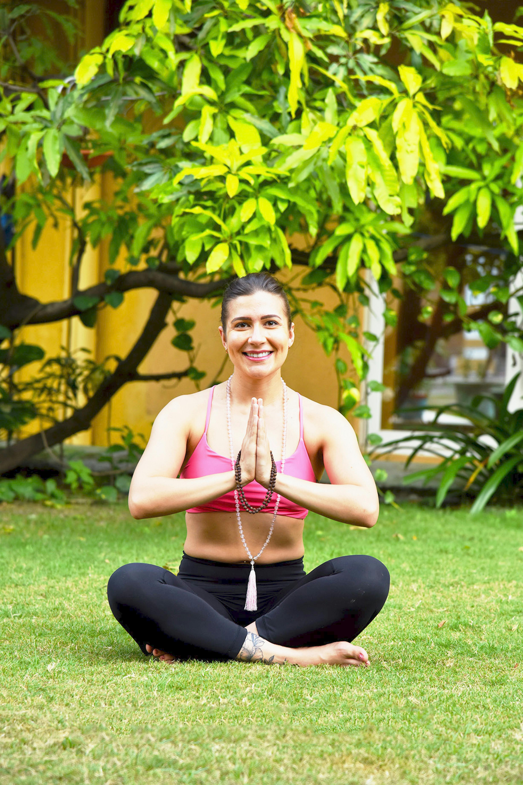
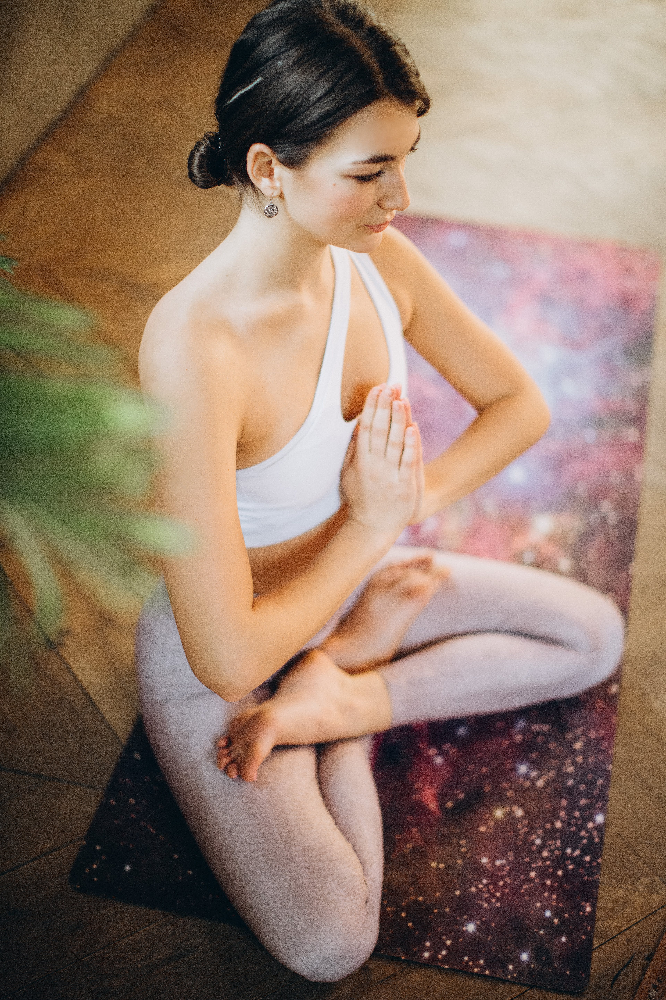

Enhance Your Mental Fitness: Engaging in online meditation is an excellent way to boost your mental well-being. Not only does it cultivate mindfulness, but it also nurtures a calm mind, reducing stress and promoting emotional balance

Immerse yourself in the serenity of online meditation. Let the gentle currents of mindfulness make you feel free and light, carrying away stress and bringing a sense of inner tranquility

Discover the art of online meditation and feel centered amidst life's chaos. Achieve mental balance and harmony

Experience the power of online meditation to feel connected – not only to yourself but to a global community seeking inner peace
Find your perfect place a cozy corner at home, a quiet park or beach, and even your own bedroom. Meditation is available at any time of the day, allowing you to find inner peace and harmony, regardless of whether it's dawn or dusk. The key is to find a quiet place where you can focus and immerse yourself in your practice. Allow yourself to savor this moment of tranquility and explore new horizons of your inner world.